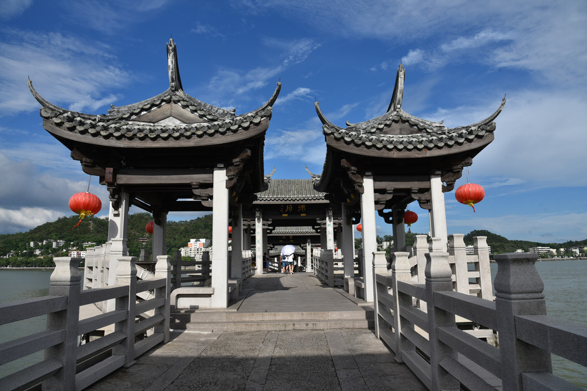
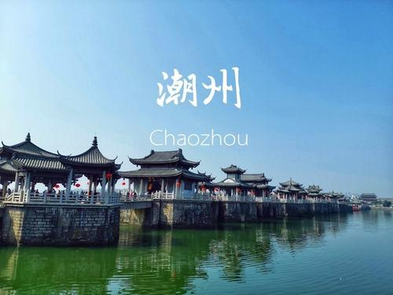
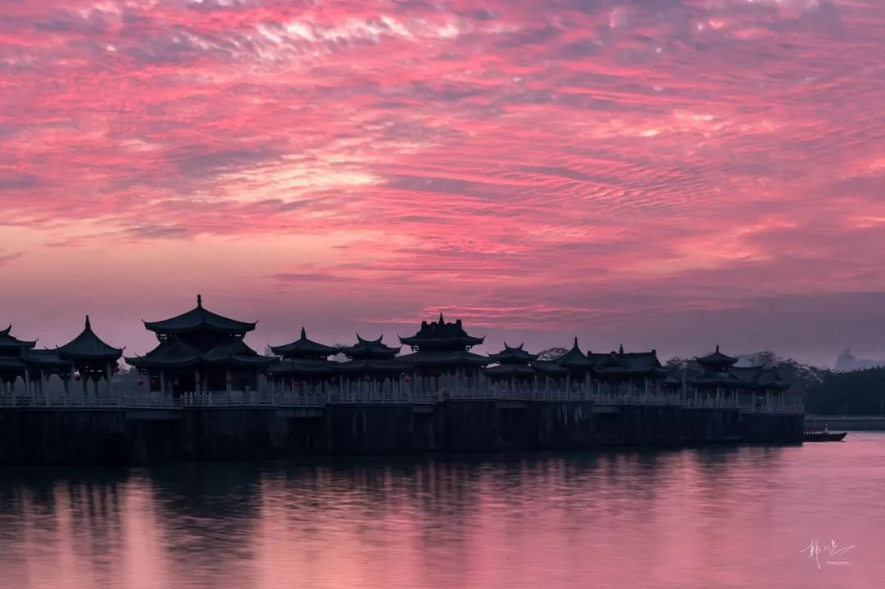
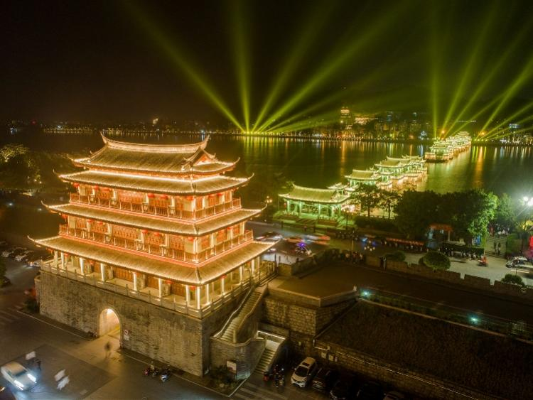
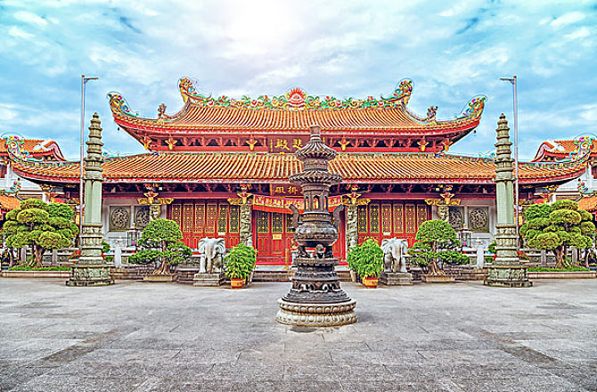
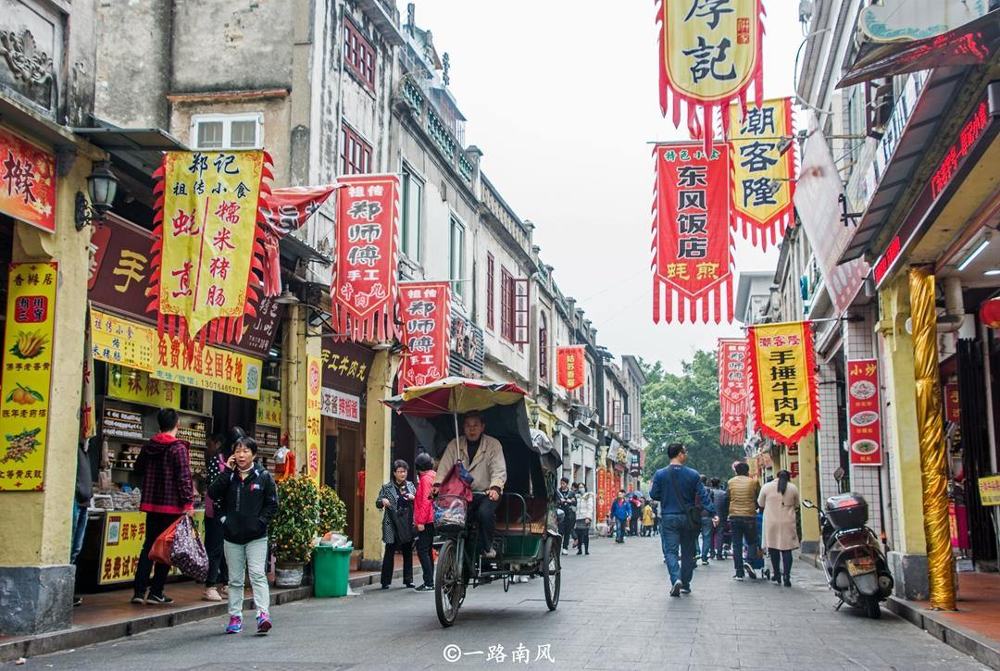

潮州简介
潮州市位于广东省最东端，处于韩江中下游。东与福建省的诏安县、平和县交界，西与我省揭阳市的揭东县接壤，北连梅州市的丰顺县、大埔县，南通汕头市和汕头市属的澄海市，并濒临南海。 潮州市于1985被国家批准为对外开放旅游城市；1986年被广东省人民政府列为沿海经济开放的县市之一；1989年列为广东省直辖市。 潮州文物古迹众多。5处全国重点文物保护单位有始建于南宋、中国四大古桥之一、被誉为世界上第一座启闭式石桥梁的广济桥，国内罕见的宋代建筑府第许驸马府，始建于唐代、堪称粤东地区佛教活动中心的开元寺，集潮州木雕之大成的己略黄公祠，反映宋代潮州陶瓷业繁荣景象的笔架山宋窑遗址。 省市级重点文物保护单位有始建于宋代、我国现存历史最久、保存最完整的纪念唐代大文学家韩愈的韩文公祠，始建于明代、全长2.6公里的古城墙，有与广州越秀山镇海楼齐名的明代建筑广济城楼等。此外还有目前国内建筑面积最大的泰式佛殿，有珍藏珍贵历史文物的淡浮文物院等。 潮州八景"凤凰时雨、湘桥春涨、鳄渡秋风、北阁佛灯、龙湫宝塔等景点，如珠散落于韩江两岸，与2.6公里古城墙、滨江长廊和古城内保存完好的古民居群一起，构成潮州古城文化旅游区的壮丽景象。景观：潮州市现有文物点700多处，包括古遗址、古墓葬、古海蚀、古建筑、古祠、古寺、古井、古桥、古塔、古牌坊、摩崖石刻、碑碣等。
- 
- 
- 
- 
- 
- 
潮州旅游景点介绍
一、湘桥春涨: 景点位于潮州广济桥，这是我国四大古桥之一。广济桥始建于宋朝，原只是浮桥一座， 历二百余年的更迭，到明朝，形成“十八梭船廿四洲”的独特风格。潮州民谣：“潮州湘桥好风 流，十八梭船廿四洲，廿四楼台廿四样，二只鉎牛一只溜”，唱的就是广济桥的历史风貌。
二、龙湫宝塔: 这本是位于潮州城北韩江河面上的小沙洲上建于宋朝的石塔。塔下树林茂密，寺院清 幽，塔边龙湫活泉环绕，故名“龙湫宝塔”。这里白天信男信女焚香礼佛，夜晚游艇如梭，饮茶抒 怀，悠然自得，其乐无穷。
三、凤凰时雨: 凤凰时雨景点是位于潮州城南郊凤凰洲北端的凤凰台，是凤凰洲公园的主体建筑，这里 夏季乍雨乍晴、神幻莫测，形成时雨美景，故景点被美称为“凤凰时雨”。在时雨季节，凤凰台上 可观烟雾朦胧，轻烟淡淡，往远可见广济桥，往下看可观车水马龙，浪漫梦幻如仙境一般。
四、北阁佛灯: 北阁景区是潮州金山东面的一组楼阁的总称。辟建于宋，形成于明，整个景区依山傍 水，自下而起，高低错落，雄伟壮观。
五、金山古松: 金山屹立于城北韩江之滨，状如覆釜，为潮州古城后枕，与西面的葫芦山，东面的笔架 山形成潮城的三面屏障。金山古松，是潮州人为纪念宋朝抗战英雄马发而植的苍松翠柏，以铭记马 发的高风亮节。